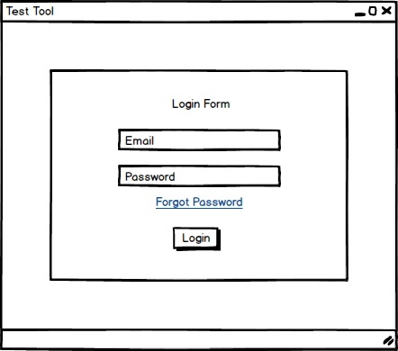
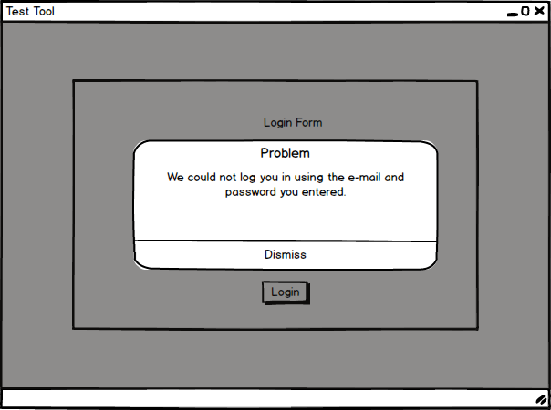
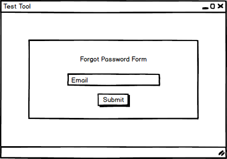
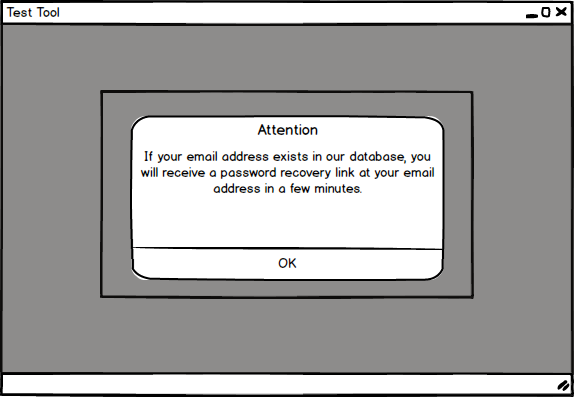

When the user initially opens the testing tool, the following screen appears as shown in Figure 1.

Figure 1: Login screen.
If the user enters a wrong Username or Password the system responds with the message shown on Figure 2.

Figure 2: Wrong Username or Password.
In case the user already has an account, but forgot his/her password, the user clicks on "Forgot Password". The system responds with the screen show on Figure 3.

Figure 3: Forgot Password screen.
The user enters his/her email address and the system responds with the message as shown in Figure 4.

Figure 4: Forgot Password Message.
The system checks the database and if the email entered in by the user, the system sends an email recovery email.